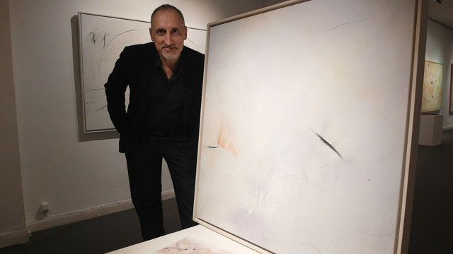
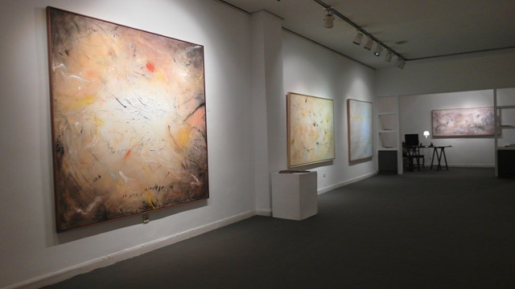
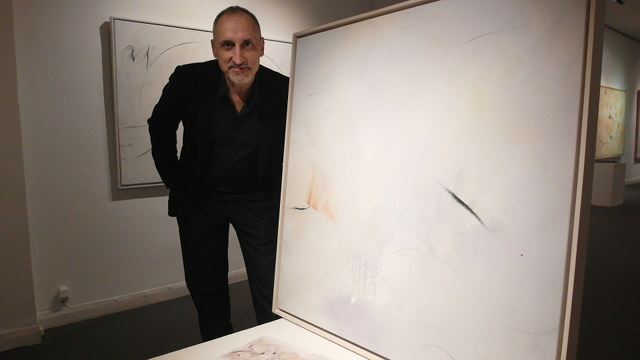
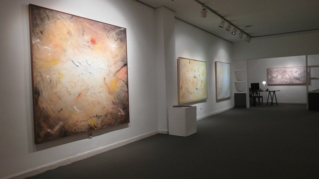
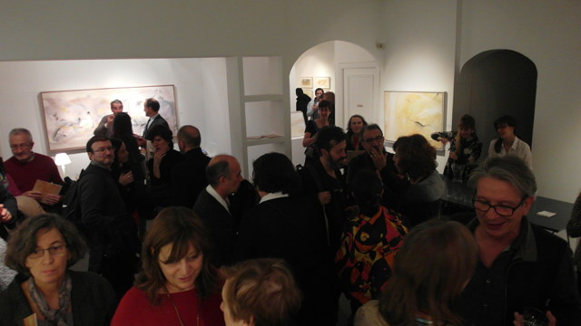
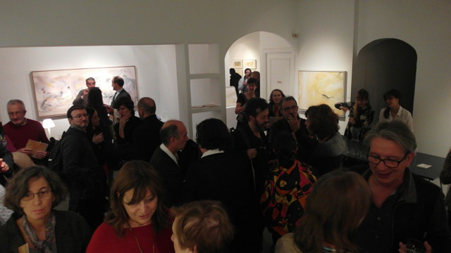
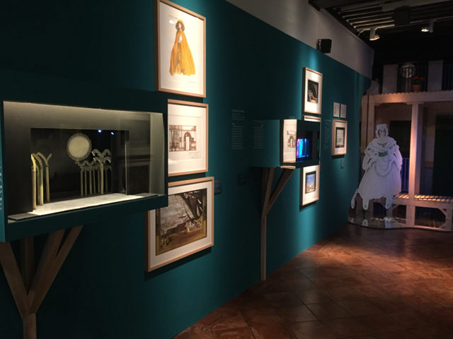
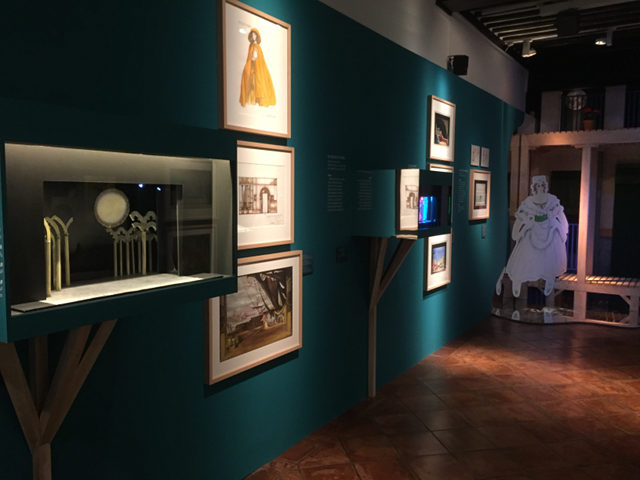

Dos escenografías en diciembre de 2020
En este mes de diciembre tienes dos oportunidades para ver las escenografías de Arturo en directo. La primera es J´attendrai, José Ramón Fernández. Estará en el Teatro Español y Naves del Español (Naves del Matadero) del 3 al 27 de diciembre.
La segunda es el reestreno de 24 horas en la vida de una mujer, de Stephan Zweig. En el Teatro Galileo del 4 de diciembre al 10 de enero.
Vídeo: Polifonía del XVI vs. Expresionismo abstracto
Nuevo vídeo de Arturo publicado en su canal.
Arturo Martín Burgos en el Museo extremeño e iberoamericano de arte contemporáneo (MEIAC)

El Museo extremeño e iberoamericano de arte contemporáneo (MEIAC) incorpora a su colección de pintura la obra de Arturo Martín Burgos titulada Paisaje de Vermont (1989, técnica mixta sobre lienzo, 272 x 224 cm).
El cuadro ha sido donado al museo por el galerista Ángel Romero, con quien Arturo trabajó en los años 90 realizando varias exposiciones individuales y colectivas en la galería que lleva su nombre. El lienzo forma parte de un conjunto de obras de gran formato de varios artistas que trabajaron para la galería entre los que se encuentran, entre otros, Manuel Rufo, Elena Blasco o Carlos León.

Exposición individual en el Museo de la Ciudad de Móstoles
Nota: exposición retrasada por contingencia COVID-19, hasta nuevo aviso.
Seleccionado convocatoria de espacios expositivos 2020. Con el proyecto Revisitando Intimidad. Del 18 de marzo al 12 de abril de 2020, en el Museo de la Ciudad de Móstoles. En palabras del artista:
La serie de pinturas y dibujos Intimidad comienza con algo tan sencillo como unas fotografías personales. Hace casi veinte años. Y continúa hasta la actualidad. Una serie de instantáneas de vivencias personales intimas, relacionadas con la vida cotidiana que utilizo desde entonces a modo de soporte pictórico.
Así, las fotografías se cubren de trazos de pintura, colores, texturas y pinceladas con líneas gruesas y delgadas, largas y cortas… las imágenes que un día tuvieron identidad propia pasaron a convivir con una abstracción. Lo que en un comienzo no fueron sino bocetos e ideas trazadas a modo de preparación, se convierten a la postre, en una obra por sí misma, sólida y reveladora: mi intimidad.

Escenografía: Mercado de amores en Mérida
Arturo realizará la escenografía para la obra Mercado de amores de Eduardo Galán sobre obras de Plauto, dentro del Festival de Teatro Clásico de Mérida 2020. Fechas por confirmar.
Arturo ya estuvo en Mérida en 2018 con la escenografía de Nerón. Puedes leer una crítica sobre aquel montaje:
Arturo Martín Burgos, el escenógrafo, ha aprovechado, casi en su totalidad, la boca del Teatro Romano. Y esto es un punto a favor del montaje, puesto que entiende el desarrollo de la historia en la totalidad del monumento.
Escenografía: Fortunata y Benito en Teatros del Canal
Arturo realizará la escenografía para Fortunata y Benito, de Laila Ripoll. Estreno el 7 de febrero de 2020 en los Teatros del Canal de Madrid. Más información y entradas.
Exposición Individual Lo Invisible: Pinturas sobre música
Del 16 de noviembre al 8 de diciembre de 2018 la Galería Gaudí de Madrid abre sus puertas a la exposición individual del pintor Arturo Martín Burgos.
Cerca de 50 obras (lienzos de todos los formatos, dibujos y collages) componen esta muestra de trabajos realizados durante los últimos diez años por el pintor madrileño.
Basados en la música de Schoenberg, Bruch y en su mayor parte del compositor francés Olivier Messiaen, los cuadros buscan un acercamiento gestual a la música, tan salvaje como reflexivo, que invita al espectador a disfrutar de emociones y experiencias cercanas a la pura sensación física y sonora del hecho musical.

 



 

Exposición: Lope de Vega en la escenografía teatral
En la Casa Museo Lope de Vega de Madrid, del 27 de abril al 2 de junio de 2017.
El comisario de la exposición Manuel R. Massip selecciona para esta muestra varios bocetos de diversas escenografías, incluyendo la maqueta realizada para La Judía de Toledo.
 
